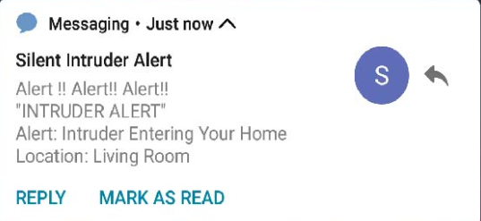
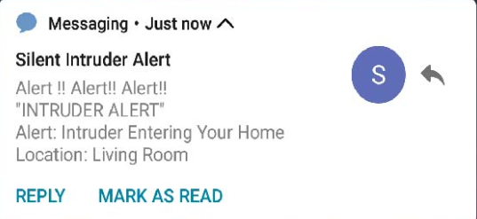

Major IoT devices Used
GSM-Module

Arduino UNO
Ultra Sonic Sensor
Major IoT devices Used
GSM-Module
Arduino UNO
Ultra Sonic Sensor
Uniqueness
Siren Activation
Integrate a siren or loud buzzer that activates when motion is detected such as breach, like a door being opened or motion being sensed, and the system is armed and this can help detect intruders and alert nearby occupants or neighbors to the potential threat. If you're home during an intrusion, the siren's loud noise immediately notifies you of a potential threat. This allows you to take appropriate action, such as calling the police or hiding in a safe location.


Camera Integration
Incorporate a camera module (such as a webcam or an IP camera) into the system to capture images or videos when motion is detected. We can then send these images or videos along with the notification to provide visual verification of the event.
Remote Activation/Deactivation
Implementing a feature that allows us to remotely arm and disarm the security system using SMS commands sent to the Arduino via the GSM module. This can be useful for enabling or disabling the system when you're away from home.
 

Final Program Code
void setup() {
Serial.begin(9600);
Serial2.begin(9600);
delay(3000);
test_sim800_module();
send_SMS();
}
void loop() {
updateSerial();
}
void test_sim800_module()
{
Serial2.println("AT");
updateSerial();
Serial.println();
Serial2.println("AT+CSQ");
updateSerial();
Serial2.println("AT+CCID");
updateSerial();
Serial2.println("AT+CREG?");
updateSerial();
Serial2.println("ATI");
updateSerial();
Serial2.println("AT+CBC");
updateSerial();
}
void updateSerial()
{
delay(500);
while (Serial.available())
{
Serial2.write(Serial.read());//Forward what Serial received to Software Serial Port
}
while (Serial2.available())
{
Serial.write(Serial2.read());//Forward what Software Serial received to Serial Port
}
}
void send_SMS()
{
Serial2.println("AT+CMGF=1"); // Configuring TEXT mode
updateSerial();
Serial2.println("AT+CMGS=\"+919804049270\"");//change ZZ with country code and xxxxxxxxxxx with phone number to sms
updateSerial();
Serial2.print("Circuit Digest"); //text content
updateSerial();
Serial.println();
Serial.println("Message Sent");
Serial2.write(26);
}
OUR TEAM MEMBER